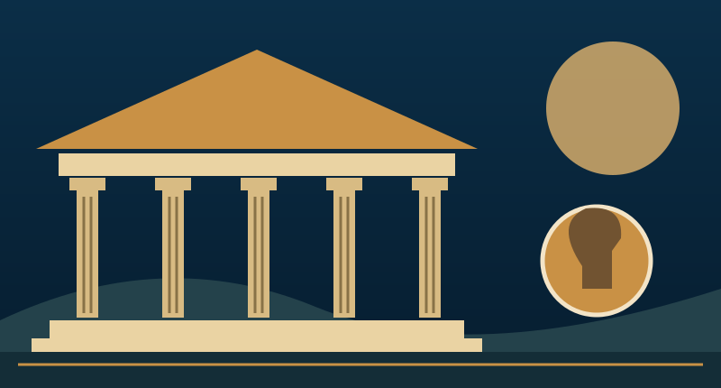
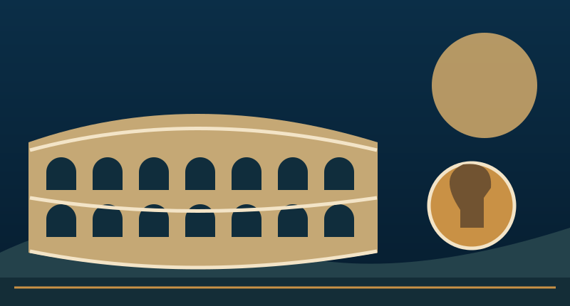
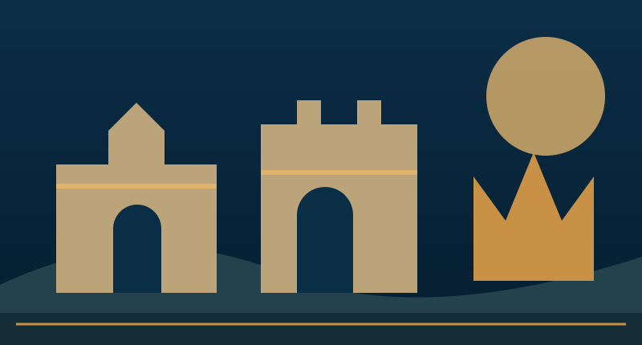

Il tempo, il potere,
le trasformazioni.
Dalla crisi della Repubblica alla corona di Carlo Magno. Leggere la storia significa riconoscere conflitti, scelte e conseguenze.
Dispense integrali, domande, mappe e verifiche. Un taccuino personale accompagna ogni percorso.

Cesare e Augusto
Il tramonto della Repubblica e la nascita del Principato
Dalla competizione aristocratica a un potere personale stabile: due modi diversi di governare la fine della Repubblica.
Entra nel percorso →
Il potere e il sangue
Dalla morte di Cesare all’anno dei quattro imperatori
Il Principato alla prova dei successori: consenso, corte, Senato, pretoriani e legioni provinciali.
Entra nel percorso →
Roma: il potere, l’esercito, la crisi
Dai Flavi alla svolta di Diocleziano
Il costo della difesa e della lotta per il potere: dai Flavi alla monarchia militare e alla riorganizzazione tetrarchica.
Entra nel percorso →
Roma cambia volto
Diocleziano e Costantino
Due risposte alla crisi: governo collegiale, riforme dello Stato, svolta religiosa e nuova capitale.
Entra nel percorso →
Il mondo che cambiò volto
Dalla morte di Costantino all’incoronazione di Carlo Magno
Una lunga metamorfosi: crisi dell’Occidente, regni postromani, Mediterraneo e nuova dignità imperiale franca.
Entra nel percorso →Un percorso, più modi di studiare
Parti dalla domanda, leggi il racconto, confronta le fonti. Poi ricostruisci i nessi con cronologie, mappe e quiz. Le sovrapposizioni fra le lezioni permettono di guardare gli stessi avvenimenti da prospettive diverse.
Seleziona un brano per copiarlo, evidenziarlo o inserirlo nel taccuino. Gli appunti restano solo in questo browser: usa il backup per conservarli o portarli su un altro dispositivo.